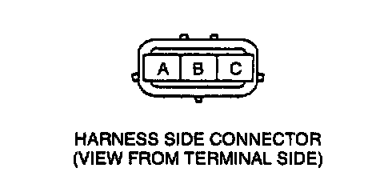

Fuel Tank Pressure (FTP) Voltage (PID) Inspection
FTP V PID Inspection Procedure1. Confirm the ignition switch is turned on.
2. Confirm that the following PIDs are within the specifications:
BARO: 101.3 kPa (760 mmHg, 29.9 inHg) (Absolute pressure)
IAT: 30-100°C (86-212°F)

3. Disconnect the fuel tank pressure sensor connector and measure the voltage at fuel tank pressure sensor connector terminal C.
Voltage: 5.0V
4. Reconnect the connector.
5. Disconnect the vacuum hose from the fuel tank pressure sensor. Connect the vacuum pump to the fuel tank pressure sensor.
6. Select FTP V PID on the NGS tester and press START.
7. Apply the vacuum and verify that the FTP V is as specified on the table.